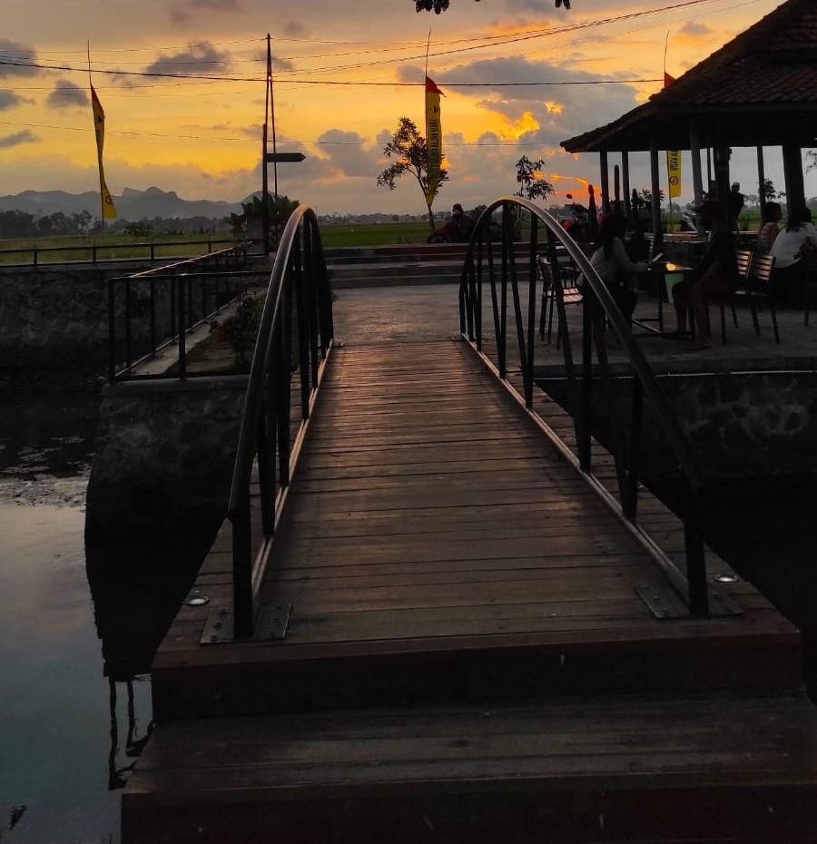
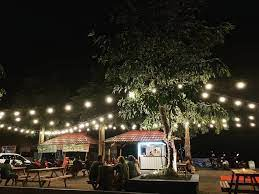

Tugas Desain Pemrograman Web
Wisata Balong Kawuk terletak di Desa Sumberejo Kulon, Kecamatan Ngunut. Meskipun belum begitu terkenal, tempat wisata yang ditargetkan rampung 2018 ini sudah banyak dikunjungi, terutama masyarakat sekitar. Kebanyakan dari mereka datang untuk memancing, ada pula yang hanya sekedar menikmati keindahan alam, bermain, hingga belajar. Tempat wisata ini dulunya hanyalah berupa sungai yang dipenuhi banyak tumbuhan liar sehingga terlihat seperti rawa. Tempatnya yang rimbun, membuat daerah ini terkesan angker. Untuk mengubah pemikiran tersebut maka dibangunlah tempat wisata ini. Pembangunan Balong Kawuk dilakukan secara gotong royong antara masyarakat dengan petugas proyek menggunakan dana desa yang digulirkan pemerintah
Balung kawuk merupakan tempat wisata yang indah. Tempatnya yang sejuk karena berada ditepian sungai tengah persawahan membuat tempat wisata ini ramai dikunjungi masyarakat. Apalagi kini sudah terdapat beberapa fasilitas penunjang seperti tempat bermain, rest area, perahu dayung, dan toilet. Rencana ke depannya, setelah Wisata Balung Kawuk dibuka dan diresmikan, tempat ini akan menjadi tempat wisata yang terbuka untuk umum. Wisatawan umum yang datang dapat dengan leluasa menikmati panorama alam sekitar, mengajak anak-anak bermain, menaiki perahu dayung, memancing di pinggiran sungai, dan sebagainya. Wisata Balong Kawuk juga dapat dijadikan sebagai peluang usaha karena prospeknya menjanjikan. Hal ini juga sangat didukung oleh Bapak Kepala Desa. Beberapa warga desa pun sudah diberikan modal usaha berupa rombong dagang. Dibukanya Wisata Balong Kawuk diharapkan dapat bermanfaat untuk seluruh pihak, baik warga Desa Sumberejo Kulon maupun masyarakat umum.
